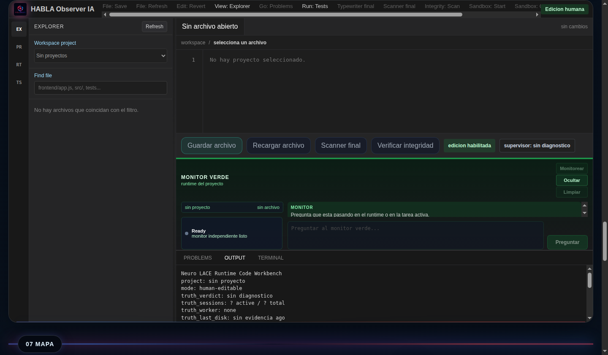
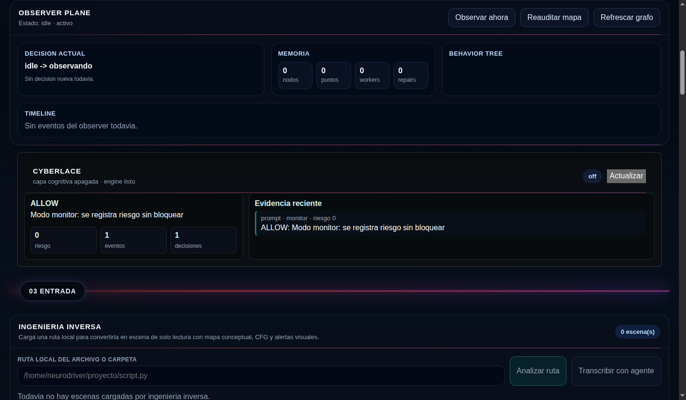
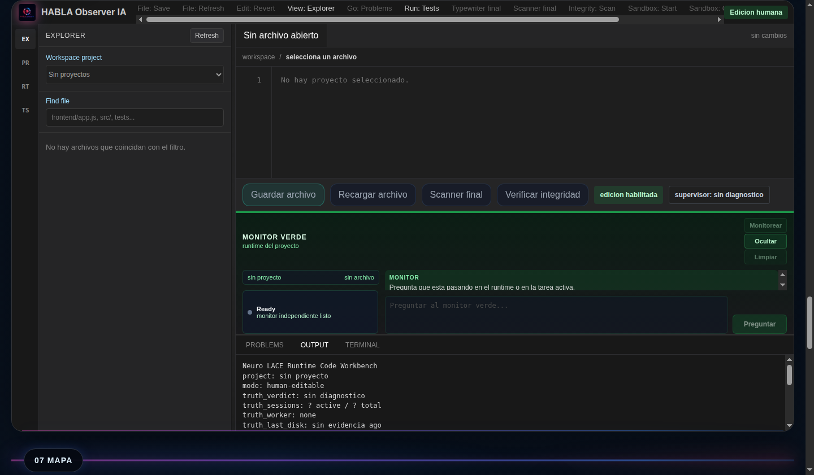
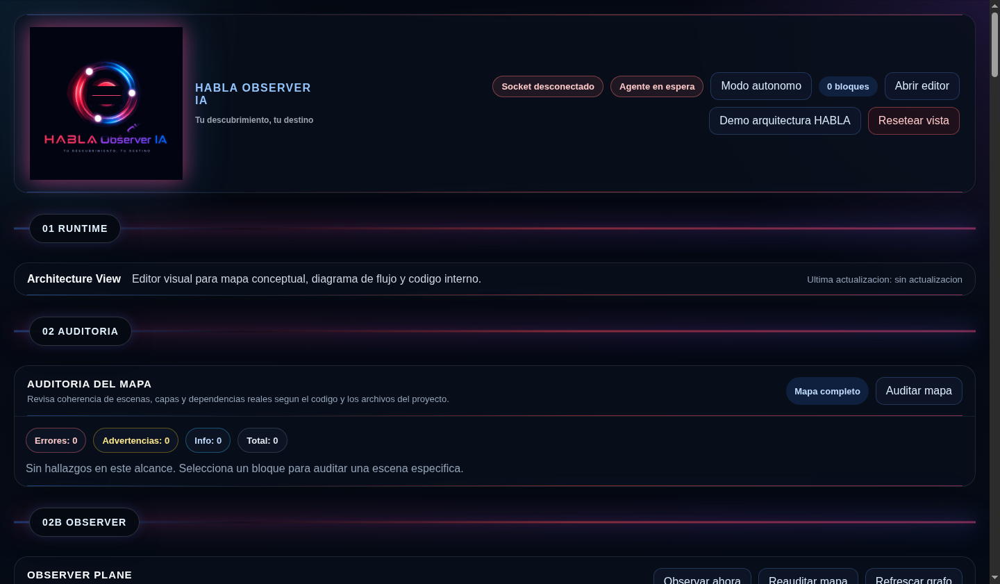
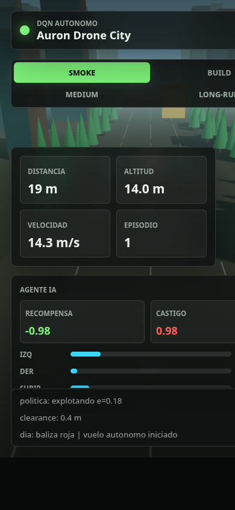
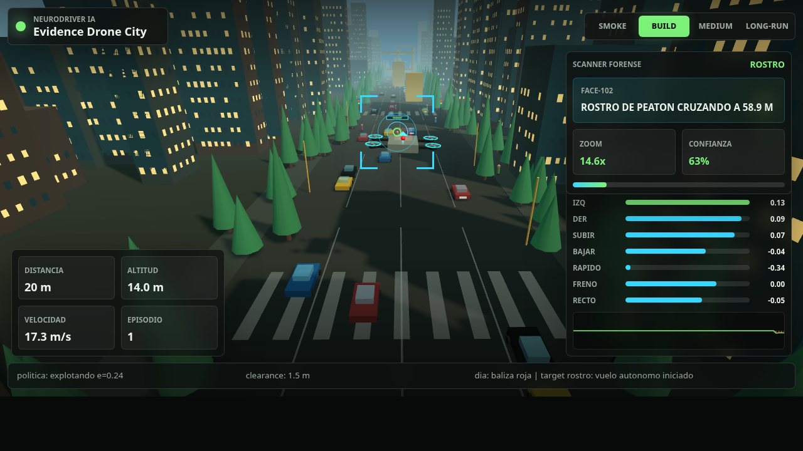

Scanner final
Lectura final hasta ultima linea con checkpoint y artefacto de validacion.
Archivos18
Lineas7816
Caracteres430044
Estadopassed
Galeria operacional del harness real: runtime, Observer, scanner, workbench, integridad, huellas SHA-256, Frozen Sniper y evidencia visual del juego 3D autonomo generado por el sistema.
Video corto construido desde artefactos versionados. No reemplaza los logs: sirve como vista rapida del sistema para GitHub y redes.
HABLA no termina en un archivo generado. El valor esta en sostener el ciclo completo hasta evidencia, auditoria y cierre.
Cada panel apunta a un artefacto real del repositorio. La galeria muestra ejecucion, no promesas.

Lectura final hasta ultima linea con checkpoint y artefacto de validacion.

Motor que registra incidentes, clasifica hallazgos y deja evidencia persistente para decision o cierre.
Servidor local listo, URL embebible y healthcheck HTTP usado como evidencia del proyecto ejecutable.

Comparacion contra baseline, boveda y ledger para detectar modificaciones, borrados o archivos no registrados.

El proyecto avanzo por tareas persistentes y ciclos de autocritica documentados antes del cierre.

Recovery forense para restaurar archivos generados y preservar evidencia congelada sin dejar hallazgos restantes.
El cierre no depende de una frase del agente. Quedan hashes, manifiestos, sellos y boveda tamper-evident.
projectId: sesion-20260518014728-jeego-en-3d
manifestSha256: 023b3e981936ab05c7c5aa8405b347b8b0d43f61e2f1e6a57f55a4f3f79714c3
sealSha256: f9e07f48affa923a6d5243ca1d553545465e579ff31dc453423758f86805163c
sealedAt: 2026-05-22T16:16:48.738435+00:00
protection: tamper_evident_vault_copy_external_anchor
runtime/artifacts/final_code_scanner_report.json
runtime/artifacts/observer_findings.json
runtime/artifacts/file_integrity_report.json
runtime/artifacts/agent_file_manifest.seal.json
runtime/artifacts/frozen_sniper_recovery_report.json
runtime/sandbox.json
Primero se muestran capturas reales de la plataforma HABLA corriendo. Despues aparece el juego 3D como evidencia generada por el harness.
